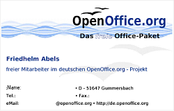

home
»
marketing
»
art
»
galleries
»
marketing
»
businesscards
Back to index...
OpenOffice.org Business Cards
Project:
Marketing Project
Description:
Various business cards created by project members to use in OpenOffice.org related activities. Just download, edit and print.
Marketing Volunteer Card.
Author: Vitor Domingos
Download:
Adobe Photoshop (PSD) format

German OpenOffice.org Project Volunteer Business Card.
Author: Friedhelm Abels
License:
PDL
Download:
OpenOffice.org Writer (SXW) format
Japanese Business Card.
Author: Shu Minari
License:
PDL
Download:
OpenOffice.org Writer (SXW) format
OOoAuthors Business Card.
Author: Linda Worthington
License:
Creative Commons - Attribution 2.0
Download:
Adobe Photoshop (PSD) format
OpenOffice.org Writer (SXW) format
OOoAuthors Business Card with seagulls motif (OpenOffice.org 2.0 splashscreen).
Author: Adam Moore
Download:
Adobe Photoshop (PSD) format
OpenOffice.org Writer (SXW) format
Japanese Native Language Community Business Card.
Author: Yutaka Kachi
License:
PDL
Download:
OpenOffice.org Writer (SXW) format
OpenOffice.org South Africa business card.
Author: Craig A. Adams
License:
Creative Commons - ShareAlike 1.0
Download:
OpenOffice.org writer (SXW) format